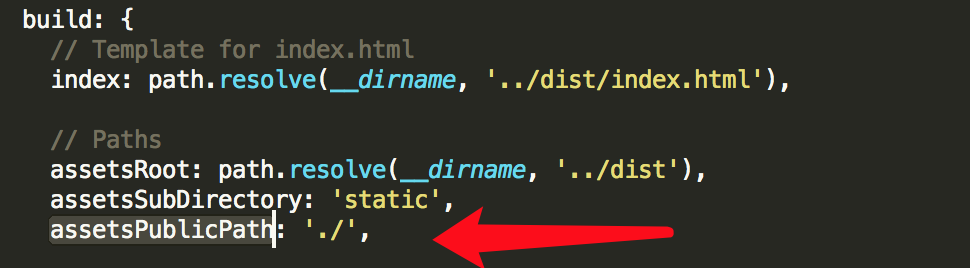
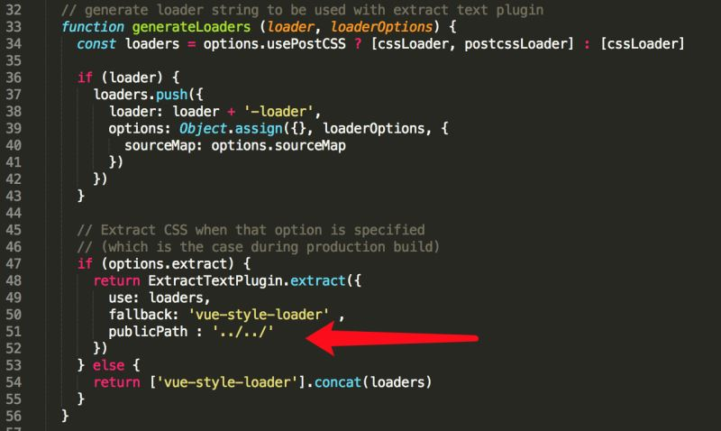

模板语法
- 文本插值
- v-html=”html”,HTMl输出
- v-bind —-HTML属性插值.
- eg:
- JavaScript表达式—直接在mustache,属性插值里面使用各种表达式(加减乘除,三元运算,方法调用等)
- 过滤器(有点类似shell命令中的管道,可以定义过滤器来对原始值进行变化)
- 指令—v-bind,v-on系列(dom事件的监听),v-for,v-model等
vue实例
实际上是viewmodel(数据+函数),都是通过构造函数Vue创建的1
2
3
4
5
6
7
8
9
10
11
12
13
14
15 var data = { a: 1 }
var vm = new Vue({
el: '#example',
data: data,
created: function () {
// `this` 指向 vm 实例
console.log('a is: ' + this.a)
}
})
vm.$data === data // -> true
vm.$el === document.getElementById('example') // -> true
// $watch 是一个实例方法
vm.$watch('a', function (newVal, oldVal) {
// 这个回调会在 `vm.a` 改变的时候触发
})
vue的生命周期
- created
- mounted
- updated
- destoryed
所有方法都被call时,this都指向所在的vue实例
生命周期图如下图所示
计算属性和监听器
计算属性
其实就是一个需要计算的getter1
2
3
4
5
6
7
8
9
10
11
12
13
14
15
16
17
18<div id="example">
<p>Original message: "{{ message }}"</p>
<p>Computed reversed message: "{{ reversedMessage }}"</p>
</div>
var vm = new Vue({
el: '#example',
data: {
message: 'Hello'
},
computed: {
// 一个 computed getter
reversedMessage: function () {
// `this` 指向 vm 实例
return this.message.split('').reverse().join('')
}
}
})
</div>
和使用method的区别在于,计算属性根据他的依赖被缓存,即如果message没有被修改,下次get不会进行重复计算,而method则每次调用都会重新计算.这也意味着如Date.now()这样返回的计算属性会永远得不到更新.
Setter
默认情况下,计算属性只有一个getter,我们也可以给它加上setter:1
2
3
4
5
6
7
8
9
10
11
12
13
14
15 computed: {
fullName: {
// getter
get: function () {
return this.firstName + ' ' + this.lastName
},
// setter
set: function (newValue) {
var names = newValue.split(' ')
this.firstName = names[0]
this.lastName = names[names.length - 1]
}
}
}
如此,当调用vm.fullName="Mark"时,firstName和lastName都会被更新
监听器
vue的watch也可以用来做类似的事1
2
3
4
5
6
7
8
9
10
11
12
13
14
15
16
17 <div id="demo">{{ fullName }}</div>
var vm = new Vue({
el: '#demo',
data: {
firstName: 'Foo',
lastName: 'Bar',
fullName: 'Foo Bar'
},
watch: {
firstName: function (val) {
this.fullName = val + ' ' + this.lastName
},
lastName: function (val) {
this.fullName = this.firstName + ' ' + val
}
}
})
对比一下计算属性版本1
2
3
4
5
6
7
8
9
10
11
12 var vm = new Vue({
el: '#demo',
data: {
firstName: 'Foo',
lastName: 'Bar'
},
computed: {
fullName: function () {
return this.firstName + ' ' + this.lastName
}
}
})
看上去简单了很多,那要watcher干啥呢
主要应用场景是异步或耗时操作:1
2
3
4
5
6
7
8
9
10
11
12
13
14
15
16
17
18
19
20
21
22
23
24
25
26
27
28
29
30
31
32
33
34
35
36
37
38
39
40
41
42
43
44 <script>
var watchExampleVM = new Vue({
el: '#watch-example',
data: {
question: '',
answer: 'I cannot give you an answer until you ask a question!'
},
watch: {
// 只要 question 改变，这个函数就会执行
question: function (newQuestion) {
this.answer = 'Waiting for you to stop typing...'
this.getAnswer()
}
},
methods: {
// _.debounce is a function provided by lodash to limit how
// often a particularly expensive operation can be run.
// In this case, we want to limit how often we access
// yesno.wtf/api, waiting until the user has completely
// finished typing before making the ajax request. To learn
// more about the _.debounce function (and its cousin
// _.throttle), visit: Lodash Documentation
getAnswer: _.debounce(
function () {
var vm = this
if (this.question.indexOf('?') === -1) {
vm.answer = 'Questions usually contain a question mark. ;-)'
return
}
vm.answer = 'Thinking...'
axios.get('https://yesno.wtf/api')
.then(function (response) {
vm.answer = _.capitalize(response.data.answer)
})
.catch(function (error) {
vm.answer = 'Error! Could not reach the API. ' + error
})
},
// 等待用户停止输入后的时间（毫秒）
500
)
}
})
</script>
如此,使用watch可以进行异步操作,限制操作间隔,并设置中间状态直到获得真正的答案.
除了使用watch option,也可以用vm.$watch
class和style绑定
除了数据绑定,常见的还有style,class的绑定
对象语法
可以传递一个对象给v-bind:class来动态切换classes:1
2
3<div class="static"
v-bind:class="{active:isActive,'text-danger':hasError}">
</div>
对应的active和text-danger则通过data传递过来
也可以通过data把class传递过来1
2
3
4
5
6
7<div v-bind:class="classObject"></div>
data:{
classObject:{
active:true,
'text-danger':false
}
}
vue中安装依赖文件
vue-cli webpack全局引入jquery
首先在package.json里加入
1
2
3dependencies:{
"jquery" : "^2.2.3"
}在webpack.base.conf.js里加入
1
var webpack = require("webpack")
在module.exports的最后加入
1
2
3
4
5
6
7plugins: [
new webpack.optimize.CommonsChunkPlugin('common.js'),
new webpack.ProvidePlugin({
jQuery: "jquery",
$: "jquery"
})
]然后一定要重新 run dev
在main.js 引入就ok了
1
import $ from 'jquery'
安装: cnpm/npm install jquery
vue中的$http服务
- 需要引入一个叫vue-resource.js的文件:cnpm/npm install vue-resource
- 然后在main.js中配置import VueResource from ‘vue-resource’;
- 然后用Vue.use(VueResource) 方法启用插件
在.vue文件中引入第三方非NPM模块
- 在 webpack.base.conf.js 中添加externals
1
2
3
4
5externals: {
'zepto': 'Zepto',
'wx': 'jWeixin',
'swiper': 'Swiper'
}
externals 中 swiper 是键，对应的值一定的是插件 swiper.js 所定义的变量 Swiper :
webpack打包vue生成的文件,在dist中访问时资源文件报404
使用vue-cli构建的vue项目，webpack的配置文件是分散在很多地方的，而我们需要修改的是build/webpack.base.conf.js，修改两处的代码1
2
3
4
5
6
7
8
9
10
11
12
13
14
15
16
17
18
19
20
21
22
23
24
25
26
27
28
29
30
31 // 在开头引入webpack，后面的plugins那里需要
var webpack = require('webpack')
// resolve
module.exports = {
// 其他代码...
resolve: {
extensions: ['', '.js', '.vue'],
fallback: [path.join(__dirname, '../node_modules')],
alias: {
'src': path.resolve(__dirname, '../src'),
'assets': path.resolve(__dirname, '../src/assets'),
'components': path.resolve(__dirname, '../src/components'),
// webpack 使用 jQuery，如果是自行下载的
// 'jquery': path.resolve(__dirname, '../src/assets/libs/jquery/jquery.min'),
// 如果使用NPM安装的jQuery
'jquery': 'jquery'
}
},
// 增加一个plugins
plugins: [
new webpack.ProvidePlugin({
$: "jquery",
jQuery: "jquery"
})
],
// 其他代码...
}
- 首先修改config目录下的index.js文件
- 将其中build的配置项assetsPublicPath进行修改，改为
- 
- 此时html中的js、css、img引入均没有问题，但是css中的background-image还是报404
- 此时的问题原因是，使用了相对地址后，在css进行引入的图片路径，其相对的是css文件的路径
- 此时的修改方法是，修改build文件夹中的utils.js文件，修改如下这一行
- 
这样css中的背景图也OK了，如果在css中引入字体也可以用这样的方式修复404问题。
- 要引入Bootstrap，我们在vue的入口js文件src/main.js开头加入
// 使用Bootstrap
import ‘./assets/libs/bootstrap/css/bootstrap.min.css’
import ‘./assets/libs/bootstrap/js/bootstrap.min’ - 使用toastr组件，只需要在需要的地方import进来，或者全局引入css在需要的地方引用js，然后直接使用
1
2
3
4
5// 使用toastr
import 'assets/libs/toastr/toastr.min.css'
import toastr from 'assets/libs/toastr/toastr.min'
toastr.success('Hello')
给后台传参数时报错
如果Web服务器无法处理编码为applicationjson的请求，你可以启用emulateJSON选项。启用该选项后，请求会以application/x-www-form-urlencoded作为MIME type，就像普通的HTML表单一样。
说白了post在进行数据请求时；需要填写第三个参数{emulateJSON:true}，否则后台是无法获取你传递的参数的
代码如下:1
2
3
4
5
6
7
8
9
10
11this.$http.post("http://192.168.0.192:8085/user/phonePCMessageValidation",{
'phoneNumber':'1563*****05'},{emulateJSON:true}).then(
function (res) {
// 处理成功的结果
console.log(res.body)
},function (err) {
// 处理失败的结果
console.log(err)
});
}